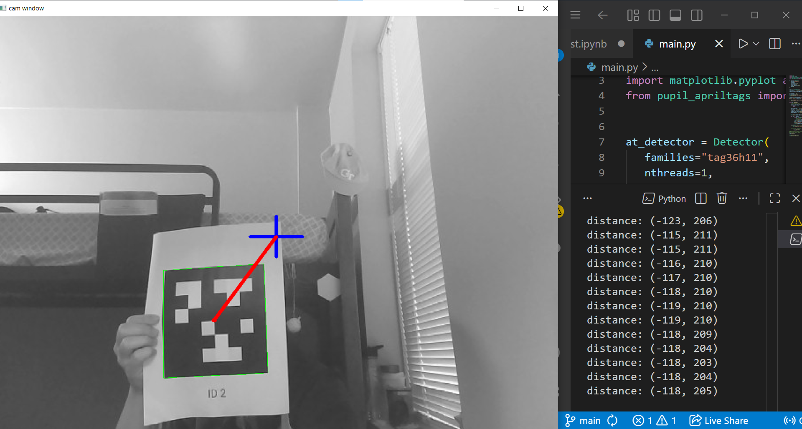
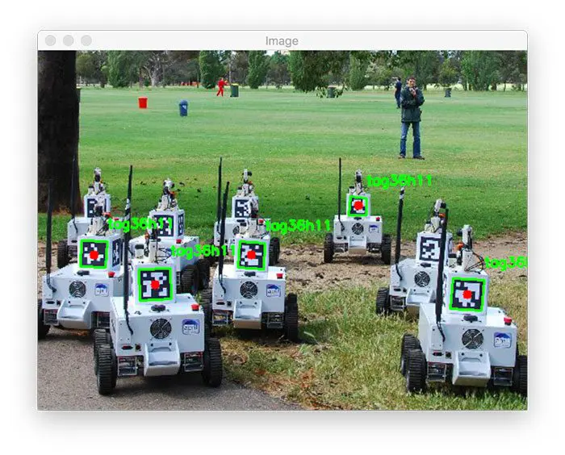

Autonomous Underwater Vehicle
In this project, I worked with my peers to explore and control remotely operated underwater vehicles. Our work included hands-on programming in Python and C++, processing sensor data, developing basic control algorithms, and executing mission-style tasks to understand how software, hardware, and hydrodynamics integrate to achieve reliable underwater operation.
Raspberry Pi

During the course, we used Rasberry Pi 4B as out main computer. We learned how to connect it with Visual Studio Code using SSH, assigning it to a static IP, and utilize it to run our AUV
BlueROV2

The BlueROV2 is a modular, remotely operated underwater vehicle (ROV) developed by Blue Robotics, designed for accessible and versatile underwater exploration. In this course, we explored the BlueROV2’s mechanical structure, control architecture, and programming interface while learning the principles of buoyancy, propulsion, and underwater navigation.
Math and Physics

To fully operate the BlueROV2, we incorporated concepts from linear algebra, calculus, and underwater physics to model and calculate the vehicle’s trajectory and motion dynamics. These principles allowed us to better understand how forces such as buoyancy, drag, and thrust influence the ROV’s movement, enabling more precise control and navigation during underwater operations. The mathematical concepts we studied were later implemented in our code using NumPy, allowing us to perform matrix calculations and simulate the physical behavior of the vehicle programmatically.
ECE 1100 Discovery Project: Computer Vision
The initial goal of this project is to develop an automated turret capable of launching ping-pong balls when it detects an AprilTag. Achieving this will require the integration of computer vision techniques for April Tag recognition, embedded systems for real-time control, and electromechanical components such as DC motors for both actuation and firing mechanisms.
ECE Skilles Gained
- AprilTag detection with OpenCV
- Used pupil_apriltags library
- Debugging with Jupyter Notebook
- Version control with Git
- Raspberry Pi embedded setup
- 3D printing
Project Progress
Computer Vision
During this part of the project, I focused on testing and validating the computer vision subsystem. This included setting up an AprilTag detection environment, experimenting with camera configurations, and integrating detection algorithms into an embedded workflow. The following sections will detail the libraries and tools incorporated into the computer vision code and how they contributed to system functionality, specifically OpenCV and pupil_apriltags. In addition to these software components, I used Git for version control to maintain organized development progress, track revisions, and manage different testing branches. I also used Jupyter Notebook to test portions of the code in isolation. This allows me to visualize detection outputs and debug my code efficiently.
pupil_apriltags
cv2 (OpenCV)
AprilTags are high-contrast visual markers designed for reliable detection and pose estimation, commonly used in robotics and computer vision applications. They function similarly to QR codes but are optimized for fast, robust identification and accurate determination of their 3D position and orientation.
The pupil_apriltags library served as the core AprilTag detection engine in the project. This library served as the core AprilTag detection engine in the project. It provides fast and reliable tag recognition by processing image frames to identify tag families, decode tag IDs, and return pose estimations. Using pupil_apriltags, I was able to obtain accurate spatial information about the tag’s position and orientation, which is essential for guiding the turret’s aiming algorithms.
OpenCV was used as the primary tool for handling image and video operations. It allowed me to interface with the camera, capture real-time frames, preprocess images through resizing or grayscale conversion, and visualize detection outputs. Additionally, OpenCV’s flexibility made it straightforward to integrate the detection pipeline into the embedded workflow, enabling efficient frame processing and debugging through visual overlays.
3D Model
To assemble the components together, I found this turret stl file online and tried to print it out in HIVE. This gave me the opportunity to explore the maker space.
Project Successes and Failures
Throughout the project, one of my major successes was getting the code to work as intended. After several rounds of testing and troubleshooting, I was able to develop a functioning software component that performed reliably and demonstrated the core logic behind the turret system. However, the largest roadblock I encountered involved the hardware setup—specifically the Raspberry Pi. Setting it up proved to be much more challenging and time-consuming than expected, and because of these difficulties, I wasn’t able to fully assemble the physical turret before the end of the course. Although this was a setback, it’s something I plan to continue working on beyond the course timeline.
Final Thoughts
I genuinely enjoyed working on this project, especially the process of exploring computer vision and seeing the detection system come to life through experimentation. Even though I faced challenges with the hardware setup, the progress I made on the software side was motivating and extremely rewarding. This project sparked a stronger interest in embedded systems and robotics, and I definitely plan to continue developing the turret during winter break—especially revisiting the Raspberry Pi setup and completing the full physical build.